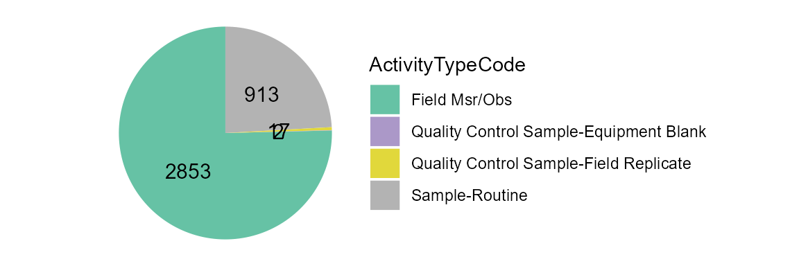
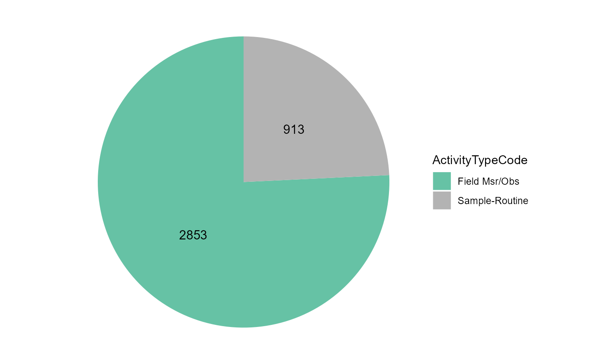
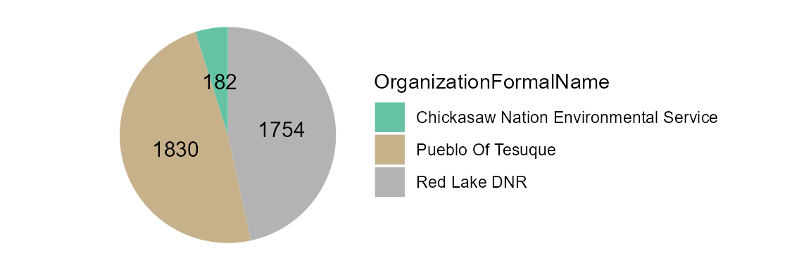
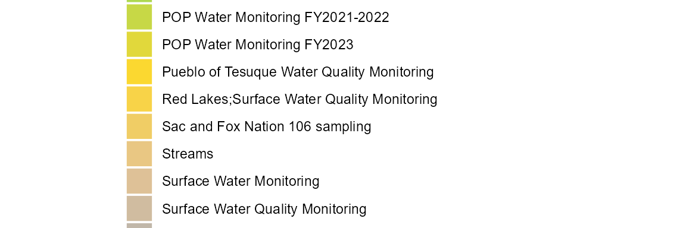
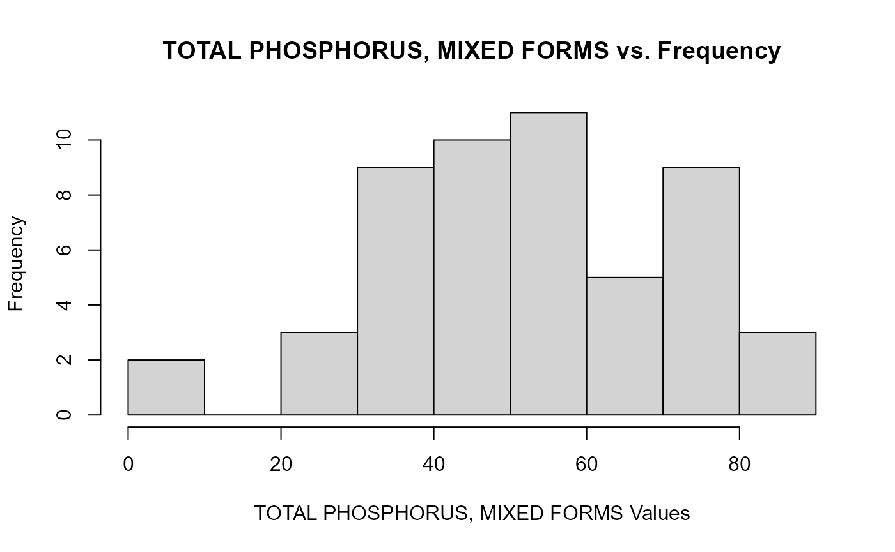

WQP Data Harmonization
TADA Team
2023-04-18
Source:vignettes/WQPDataHarmonization.Rmd
WQPDataHarmonization.RmdOverview
This vignette will walk through how to discover, wrangle, QAQC, and harmonize Water Quality Portal (WQP) data from multiple organizations.
Install and load packages
To install TADA, currently you need to install from GitHub using remotes (shown) or devtools.
First, install and load the “remotes” package specifying the repo. This is needed before installing TADA because it is only available on GitHub (not CRAN).
install.packages("remotes",
repos = "http://cran.us.r-project.org")
library(remotes)Next, install and load TADA. dataRetrieval and other TADA R Package dependencies will also be downloaded from CRAN with the TADA install, but the development version can be downloaded directly from GitHub if desired (un-comment).
# remotes::install_github("USGS-R/dataRetrieval", dependencies=TRUE)
# if you experience any issues installing TADA, try un-commenting and running
# the line below before the install
# options(download.file.method = "wininet")
remotes::install_github("USEPA/TADA",
ref = "develop",
dependencies = TRUE)
library(TADA)Retrieve WQP data
WQP data is retrieved and processed for compatibility with TADA. This function, TADAdataRetrieval, builds on the USGS dataRetrieval package functions. It joins four WQP profiles (i.e., Site metadata, Sample Results (narrow), Sample Results (physical/chemical metadata), and Project metadata. In addition, it changes all data in the Characteristic, Speciation, Fraction, and Unit fields to uppercase, removes true duplicates, and addressed result values that include special characters.
This function uses the same inputs as the dataRetrieval
readWQPdata function. readWQPdata does not
restrict the characteristics pulled from Water Quality Portal (WQP).
You may specify the desired characteristics by using, for instance:
characteristicName = “pH”.
Data retrieval filters include:
startDate
endDate
characteristicName
sampleMedia
siteType
statecode (review list of possible state and territory abbreviations)
countycode
siteid
organization
project
huc
characteristicType
Please be aware that the default TADAdataRetrieval function automatically runs the TADA autoclean and ConvertSpecialChars functions. Both are both required for subsequent functions within the TADA R package to run. As a general rule, TADA functions do not change any contents in the WQP-served columns (enter ?ConvertSpecialChars and ?autoclean into the console for more details). Instead, they add new columns with the prefix “TADA.” The following columns are numeric versions of their WQP origins:
- TADA.ResultMeasureValue
- TADA.DetectionQuantitationLimitMeasure.MeasureValue
- TADA.LatitudeMeasure
- TADA.LongitudeMeasureThese functions also add the columns TADA.ResultMeasureValueDataTypes.Flag and TADA.DetectionQuantitationLimitMeasure.MeasureValueDataTypes.Flag, which provide information about the result values that is needed to address censored data later on (i.e., nondetections). Specifically, these new columns flag if special characters are included in result values, and specifies what the special characters are.
Downloads using TADAdataRetrieval will have the same columns each time, but be aware that data are uploaded to the Water Quality Portal by individual organizations, which may or may not follow the same conventions. Data and metadata quality are not guaranteed! Make sure to carefully explore any data and make conservative quality assurance decisions where information is limited.
Tips:
-
All the query filters for the WQP work as an AND but within the fields there are ORs. For example:
Characteristics: If you choose pH & DO - it’s an OR. This means you will retrieve both pH OR DO data if available.
States: Similarly, if you choose VA and IL, it’s an OR. This means you will retrieve both VA OR IL data if available.
Combinations of fields are ANDs, such as State/VA AND Characteristic/DO”. This means you will receive all DO data available in VA.
“Characteristic” and “Characteristic Type” also work as an AND. This means that the Characteristic must fall within the CharacteristicGroup if both filters are being used, if not you will get an error.
The “siteid” is a general term WQP uses to describe both Site IDs from USGS databases and Monitoring Location Identifiers (from the Water Quality Portal). Each monitoring location in the Water Quality Portal (WQP) has a unique Monitoring Location Identifier, regardless of the database from which it derives. The Monitoring Location Identifier from the WQP is the concatenated Organization Identifier plus the Site ID number. Site IDs that only include a number are only unique identifiers for monitoring locations within USGS NWIS or EPA’s WQX databases separately.
Additional resources:
Review function documentation by entering the following code into the console: ?TADAdataRetrieval
dataRetrieval
Uncomment below if you would like to review differences between the profiles you would get using readWQPdata vs. TADAdataRetrieval. The profiles are different because TADAdataRetrieval automatically joins in data from multiple WQP profiles, and does some additional data cleaning as part of the data retrieval process.
This example includes monitoring data collected from Jan 2018 to present by six organizations: 1) Red Lake Band of Chippewa Indians, 2) Sac & Fox Nation, 3) Pueblo of Pojoaque, 4) Minnesota Chippewa Tribe (Fond du Lac Band), 5) Pueblo of Tesuque, and 6) The Chickasaw Nation
We will move forward with this example in the remainder of the vignette.
# dataRetrieval_example <- dataRetrieval::readWQPdata(organization =
# c("REDLAKE_WQX",
# "SFNOES_WQX",
# "PUEBLO_POJOAQUE",
# "FONDULAC_WQX",
# "PUEBLOOFTESUQUE",
# "CNENVSER"),
# startDate = "2018-01-01",
# ignore_attributes = TRUE)Use the code below to download data from the WQP using TADAdataRetrieval. Edit the code chuck below to define your own WQP query inputs.
Note: TADAdataRetrieval (by leveraging dataRetrieval), automatically converts the date times to UTC. It also automatically converts the data to dates, datetimes, and numerics based on a standard algorithm.
Enter ?TADAdataRetrieval into the console to review more example queries and additional information.
TADAProfile <- TADAdataRetrieval(organization = c("REDLAKE_WQX",
"SFNOES_WQX",
"PUEBLO_POJOAQUE",
"FONDULAC_WQX",
"PUEBLOOFTESUQUE",
"CNENVSER"),
startDate = "2018-01-01")
#> [1] "NOTE: This version of the TADA package is designed to work with data with sample media: 'WATER'. autoclean does not currently filter downloaded data to 'WATER'. The user must make this specification on their own outside of package functions. See the WQPDataHamornization vignette for an example."If you need to download a large amount of data from across a large area, and the TADAdataRetrieval function is not working due to WQP timeout issues, then the TADABigdataRetrieval function may work better.
This function does multiple synchronous data calls to the WQP (waterqualitydata.us). It uses the WQP summary service to limit the sites downloaded to only those with relevant data. It pulls back data from set number of stations at a time and then joins the data back together to produce a single TADA compatible dataframe as the output.
See ?TADABigdataRetrieval for more details. WARNING, some of the examples below can take multiple HOURS to run. The total run time depends on your query inputs.
# AK_AL_WaterTemp <- TADABigdataRetrieval(startDate = "2000-01-01",
# endDate = "2022-12-31",
# characteristicName = "Temperature, water",
# statecode = c("AK","AL"))
#
# AllWaterTemp <- TADABigdataRetrieval(characteristicName = "Temperature, water")
#
# AllPhosphorus <- TADABigdataRetrieval(characteristicName = "Phosphorus")
#
# AllCT <- TADABigdataRetrieval(statecode = "CT")Review all column names in the TADA Profile. Remove results that are not water samples or measurements (TADA is recommended for use with water data only).
colnames(TADAProfile)
#> [1] "OrganizationIdentifier"
#> [2] "OrganizationFormalName"
#> [3] "ActivityIdentifier"
#> [4] "ActivityTypeCode"
#> [5] "ActivityMediaName"
#> [6] "ActivityMediaSubdivisionName"
#> [7] "ActivityStartDate"
#> [8] "ActivityStartTime.Time"
#> [9] "ActivityStartTime.TimeZoneCode"
#> [10] "ActivityEndDate"
#> [11] "ActivityEndTime.Time"
#> [12] "ActivityEndTime.TimeZoneCode"
#> [13] "ActivityRelativeDepthName"
#> [14] "ActivityDepthHeightMeasure.MeasureValue"
#> [15] "ActivityDepthHeightMeasure.MeasureUnitCode"
#> [16] "ActivityDepthAltitudeReferencePointText"
#> [17] "ActivityTopDepthHeightMeasure.MeasureValue"
#> [18] "ActivityTopDepthHeightMeasure.MeasureUnitCode"
#> [19] "ActivityBottomDepthHeightMeasure.MeasureValue"
#> [20] "ActivityBottomDepthHeightMeasure.MeasureUnitCode"
#> [21] "ProjectIdentifier"
#> [22] "ProjectName"
#> [23] "ActivityConductingOrganizationText"
#> [24] "MonitoringLocationIdentifier"
#> [25] "MonitoringLocationName"
#> [26] "ActivityCommentText"
#> [27] "SampleAquifer"
#> [28] "HydrologicCondition"
#> [29] "HydrologicEvent"
#> [30] "ActivityLocation.LatitudeMeasure"
#> [31] "ActivityLocation.LongitudeMeasure"
#> [32] "SampleCollectionMethod.MethodIdentifier"
#> [33] "SampleCollectionMethod.MethodIdentifierContext"
#> [34] "SampleCollectionMethod.MethodName"
#> [35] "SampleCollectionMethod.MethodDescriptionText"
#> [36] "SampleCollectionEquipmentName"
#> [37] "ResultIdentifier"
#> [38] "ResultDetectionConditionText"
#> [39] "MethodSpeciationName"
#> [40] "CharacteristicName"
#> [41] "ResultSampleFractionText"
#> [42] "ResultMeasureValue"
#> [43] "ResultMeasure.MeasureUnitCode"
#> [44] "MeasureQualifierCode"
#> [45] "ResultStatusIdentifier"
#> [46] "StatisticalBaseCode"
#> [47] "ResultValueTypeName"
#> [48] "ResultWeightBasisText"
#> [49] "ResultTimeBasisText"
#> [50] "ResultTemperatureBasisText"
#> [51] "ResultParticleSizeBasisText"
#> [52] "DataQuality.PrecisionValue"
#> [53] "DataQuality.BiasValue"
#> [54] "DataQuality.ConfidenceIntervalValue"
#> [55] "DataQuality.UpperConfidenceLimitValue"
#> [56] "DataQuality.LowerConfidenceLimitValue"
#> [57] "ResultCommentText"
#> [58] "USGSPCode"
#> [59] "ResultDepthHeightMeasure.MeasureValue"
#> [60] "ResultDepthHeightMeasure.MeasureUnitCode"
#> [61] "ResultDepthAltitudeReferencePointText"
#> [62] "SubjectTaxonomicName"
#> [63] "SampleTissueAnatomyName"
#> [64] "BinaryObjectFileName"
#> [65] "BinaryObjectFileTypeCode"
#> [66] "ResultFileUrl"
#> [67] "ResultAnalyticalMethod.MethodIdentifier"
#> [68] "ResultAnalyticalMethod.MethodIdentifierContext"
#> [69] "ResultAnalyticalMethod.MethodName"
#> [70] "ResultAnalyticalMethod.MethodUrl"
#> [71] "ResultAnalyticalMethod.MethodDescriptionText"
#> [72] "LaboratoryName"
#> [73] "AnalysisStartDate"
#> [74] "ResultLaboratoryCommentText"
#> [75] "ResultDetectionQuantitationLimitUrl"
#> [76] "DetectionQuantitationLimitTypeName"
#> [77] "DetectionQuantitationLimitMeasure.MeasureValue"
#> [78] "DetectionQuantitationLimitMeasure.MeasureUnitCode"
#> [79] "LabSamplePreparationUrl"
#> [80] "LastUpdated"
#> [81] "ProviderName"
#> [82] "timeZoneStart"
#> [83] "timeZoneEnd"
#> [84] "ActivityStartDateTime"
#> [85] "ActivityEndDateTime"
#> [86] "MonitoringLocationTypeName"
#> [87] "MonitoringLocationDescriptionText"
#> [88] "HUCEightDigitCode"
#> [89] "DrainageAreaMeasure.MeasureValue"
#> [90] "DrainageAreaMeasure.MeasureUnitCode"
#> [91] "ContributingDrainageAreaMeasure.MeasureValue"
#> [92] "ContributingDrainageAreaMeasure.MeasureUnitCode"
#> [93] "LatitudeMeasure"
#> [94] "LongitudeMeasure"
#> [95] "SourceMapScaleNumeric"
#> [96] "HorizontalAccuracyMeasure.MeasureValue"
#> [97] "HorizontalAccuracyMeasure.MeasureUnitCode"
#> [98] "HorizontalCollectionMethodName"
#> [99] "HorizontalCoordinateReferenceSystemDatumName"
#> [100] "VerticalMeasure.MeasureValue"
#> [101] "VerticalMeasure.MeasureUnitCode"
#> [102] "VerticalAccuracyMeasure.MeasureValue"
#> [103] "VerticalAccuracyMeasure.MeasureUnitCode"
#> [104] "VerticalCollectionMethodName"
#> [105] "VerticalCoordinateReferenceSystemDatumName"
#> [106] "CountryCode"
#> [107] "StateCode"
#> [108] "CountyCode"
#> [109] "AquiferName"
#> [110] "LocalAqfrName"
#> [111] "FormationTypeText"
#> [112] "AquiferTypeName"
#> [113] "ConstructionDateText"
#> [114] "WellDepthMeasure.MeasureValue"
#> [115] "WellDepthMeasure.MeasureUnitCode"
#> [116] "WellHoleDepthMeasure.MeasureValue"
#> [117] "WellHoleDepthMeasure.MeasureUnitCode"
#> [118] "MethodSpecificationName"
#> [119] "ProjectDescriptionText"
#> [120] "SamplingDesignTypeCode"
#> [121] "QAPPApprovedIndicator"
#> [122] "QAPPApprovalAgencyName"
#> [123] "ProjectFileUrl"
#> [124] "ProjectMonitoringLocationWeightingUrl"
#> [125] "TADA.LatitudeMeasure"
#> [126] "TADA.LongitudeMeasure"
#> [127] "TADA.ActivityMediaName"
#> [128] "TADA.CharacteristicName"
#> [129] "TADA.ResultMeasureValue"
#> [130] "TADA.ResultMeasureValueDataTypes.Flag"
#> [131] "TADA.ResultMeasure.MeasureUnitCode"
#> [132] "TADA.MethodSpecificationName"
#> [133] "TADA.ResultSampleFractionText"
#> [134] "TADA.DetectionQuantitationLimitMeasure.MeasureValue"
#> [135] "TADA.DetectionQuantitationLimitMeasure.MeasureUnitCode"
#> [136] "TADA.DetectionQuantitationLimitMeasure.MeasureValueDataTypes.Flag"
TADAProfile_CharSummary <- TADA_summarizeColumn(TADAProfile,
"TADA.CharacteristicName")
TADAProfile_CharSummary
#> # A tibble: 133 × 3
#> TADA.CharacteristicName n_sites n_records
#> <chr> <int> <int>
#> 1 .ALPHA.-ENDOSULFAN 6 7
#> 2 .BETA.-ENDOSULFAN 6 7
#> 3 ALDRIN 6 7
#> 4 ALKALINITY, TOTAL 159 3513
#> 5 ALPHA PARTICLE 10 24
#> 6 ALUMINUM 10 28
#> 7 AMMONIA 4 4
#> 8 AMMONIA-NITROGEN 104 1344
#> 9 AMMONIUM 17 214
#> 10 APPARENT COLOR 42 302
#> # ℹ 123 more rows
# Remove data for non-water media types
TADAProfile <- dplyr::filter(TADAProfile,
TADA.ActivityMediaName == "WATER")Invalid coordinates
Review station locations
#create a map of the world
maps::map()
# draw the sites included in your TADAProfile onto the map
points(TADAProfile$TADA.LongitudeMeasure,
TADAProfile$TADA.LatitudeMeasure,
col="red",
pch=20)The TADA InvalidCoordinates function identifies and flags potentially invalid coordinate data. While its functionality is showcased here, it is always important to review any invalid outputs before cleaning to reduce the risk of leaving out usable data/sites.
Allowable values for clean_outsideUSA are “no”, “remove”, or “change sign”. The default is “no” which flags latitude and longitude coordinates outside the USA. Assigning clean_ousideUSA = “remove” will remove rows of data with coordinates outside the USA. And assigning clean_outsideUSA = “change sign” will flip the sign of latitude or longitude coordinates flagged as outside the USA. The “change sign” option should only be used when it is known that coordinates were entered with the wrong sign in WQX; additionally, the data owner should fix these incorrect coordinates in the raw data through the WQX - for assistance email the WQX help desk: WQX@epa.gov
Allowable values for clean_imprecise are TRUE or FALSE. The default is FALSE which flags rows of data with invalid or imprecise coordinates without removing them. Assigning clean_imprecise = TRUE will remove rows of data with invalid or imprecise coordinates.
Allowable values for errorsonly are TRUE or FALSE. The default is FALSE which keeps all rows of data regardless of flag status. Assigning errorsonly = TRUE filters the dataframe to show only rows of data which are flagged.
When clean_outsideUSA = “no” and/or clean_imprecise = FALSE, a column will be appended titled “TADA.InvalidCoordinates.Flag” with the following flags (if relevant to dataframe):
If the latitude is less than zero, the row will be flagged with “LAT_OutsideUSA”. (Exception for American Samoa)
If the longitude is greater than zero AND less than 145, the row will be flagged as “LONG_OutsideUSA”. (Exceptions for Guam and the Northern Mariana Islands)
If the latitude or longitude contains the string, “999”, the row will be flagged as invalid.
Finally, precision can be measured by the number of decimal places in the latitude and longitude provided. If either does not have any numbers to the right of the decimal point, the row will be flagged as “Imprecise”.
# flag only
TADAProfileClean1 <- InvalidCoordinates(TADAProfile,
clean_outsideUSA = "no",
clean_imprecise = FALSE,
errorsonly = TRUE)
# review unique flags in TADAProfileClean1
unique(TADAProfileClean1$TADA.InvalidCoordinates.Flag)
#> [1] "Imprecise_Longincludes999" "Imprecise_lessthan3decimaldigits"
# review unique MonitoringLocationIdentifiers in your flag dataframe
unique(TADAProfileClean1$MonitoringLocationIdentifier)
#> [1] "REDLAKE_WQX-10RD014" "REDLAKE_WQX-MUDR-M"
#> [3] "PUEBLOOFTESUQUE-MS01AD" "PUEBLOOFTESUQUE-MS06VG"
#> [5] "CNENVSER-PCFFJOHN111303040203" "CNENVSER-WRMUR111303030806"
Unique_InvalidCoordinateFlags <- TADAProfileClean1 %>%
dplyr::select('MonitoringLocationIdentifier',
'MonitoringLocationName',
'TADA.InvalidCoordinates.Flag',
'OrganizationIdentifier',
'TADA.LongitudeMeasure',
'TADA.LatitudeMeasure',
'MonitoringLocationTypeName',
'CountryCode',
'StateCode',
'CountyCode',
'HUCEightDigitCode',
'MonitoringLocationDescriptionText',
'ProjectName',
'ProjectIdentifier',
'OrganizationFormalName') %>%
dplyr::distinct()
Unique_InvalidCoordinateFlags
#> MonitoringLocationIdentifier
#> 1 REDLAKE_WQX-10RD014
#> 2 REDLAKE_WQX-MUDR-M
#> 3 REDLAKE_WQX-10RD014
#> 4 REDLAKE_WQX-MUDR-M
#> 5 REDLAKE_WQX-10RD014
#> 6 REDLAKE_WQX-MUDR-M
#> 7 PUEBLOOFTESUQUE-MS01AD
#> 8 PUEBLOOFTESUQUE-MS06VG
#> 9 CNENVSER-PCFFJOHN111303040203
#> 10 CNENVSER-WRMUR111303030806
#> MonitoringLocationName
#> 1 Mud River at MUDR-M
#> 2 Mud River Middle
#> 3 Mud River at MUDR-M
#> 4 Mud River Middle
#> 5 Mud River at MUDR-M
#> 6 Mud River Middle
#> 7 USGS Guaging station Above Diversions/USFS Boundary
#> 8 Vigil Grant
#> 9 Pennington Creek (Fish Farm)
#> 10 Washita River
#> TADA.InvalidCoordinates.Flag OrganizationIdentifier
#> 1 Imprecise_Longincludes999 REDLAKE_WQX
#> 2 Imprecise_Longincludes999 REDLAKE_WQX
#> 3 Imprecise_Longincludes999 REDLAKE_WQX
#> 4 Imprecise_Longincludes999 REDLAKE_WQX
#> 5 Imprecise_Longincludes999 REDLAKE_WQX
#> 6 Imprecise_Longincludes999 REDLAKE_WQX
#> 7 Imprecise_lessthan3decimaldigits PUEBLOOFTESUQUE
#> 8 Imprecise_lessthan3decimaldigits PUEBLOOFTESUQUE
#> 9 Imprecise_lessthan3decimaldigits CNENVSER
#> 10 Imprecise_lessthan3decimaldigits CNENVSER
#> TADA.LongitudeMeasure TADA.LatitudeMeasure MonitoringLocationTypeName
#> 1 -94.89993 47.87549 River/Stream
#> 2 -94.89993 47.87549 River/Stream
#> 3 -94.89993 47.87549 River/Stream
#> 4 -94.89993 47.87549 River/Stream
#> 5 -94.89993 47.87549 River/Stream
#> 6 -94.89993 47.87549 River/Stream
#> 7 -105.89900 35.74000 River/Stream
#> 8 -105.83400 35.78000 River/Stream
#> 9 -96.71000 34.35300 River/Stream
#> 10 -97.14000 34.49300 River/Stream
#> CountryCode StateCode CountyCode HUCEightDigitCode
#> 1 US 27 7 09020302
#> 2 US 27 7 09020302
#> 3 US 27 7 09020302
#> 4 US 27 7 09020302
#> 5 US 27 7 09020302
#> 6 US 27 7 09020302
#> 7 US 35 49 13020101
#> 8 US 35 49 13020101
#> 9 US 40 69 11130304
#> 10 US 40 99 11130303
#> MonitoringLocationDescriptionText
#> 1 <NA>
#> 2 <NA>
#> 3 <NA>
#> 4 <NA>
#> 5 <NA>
#> 6 <NA>
#> 7 <NA>
#> 8 <NA>
#> 9 <NA>
#> 10 <NA>
#> ProjectName
#> 1 Surface Water Quality Monitoring;Region 5 Regional Monitoring Network for Streams
#> 2 Surface Water Quality Monitoring;Streams
#> 3 Surface Water Quality Monitoring;Streams
#> 4 Streams
#> 5 Bioassessment;Surface Water Quality Monitoring
#> 6 Surface Water Quality Monitoring
#> 7 Pueblo of Tesuque Water Quality Monitoring
#> 8 Pueblo of Tesuque Water Quality Monitoring
#> 9 Chickasaw Nation Physical-Chemical Data
#> 10 Chickasaw Nation Physical-Chemical Data
#> ProjectIdentifier OrganizationFormalName
#> 1 RLSWQD;RMN Streams Red Lake DNR
#> 2 RLSWQD;Streams Red Lake DNR
#> 3 RLSWQD;Streams Red Lake DNR
#> 4 Streams Red Lake DNR
#> 5 Bioassessment;RLSWQD Red Lake DNR
#> 6 RLSWQD Red Lake DNR
#> 7 PT_MONIT Pueblo Of Tesuque
#> 8 PT_MONIT Pueblo Of Tesuque
#> 9 CNCWA106CHEMDATA Chickasaw Nation Environmental Service
#> 10 CNCWA106CHEMDATA Chickasaw Nation Environmental Service
# if needed, un-comment below to change the sign for all data for sites flagged
# as outside the USA
# you can also change FALSE to TRUE if you want to remove sites outside of the
# US or sites with imprecise lat/longs
#
# TADAProfileClean1 <- InvalidCoordinates(TADAProfile,
# clean_outsideUSA = "change sign",
# clean_imprecise = FALSE,
# errorsonly = FALSE)Depth unit conversions
The ConvertDepthUnits function converts depth units to a consistent unit. Depth values and units are most commonly associated with lake data, and are populated in the ActivityDepthHeightMeasure, ActivityTopDepthHeightMeasure, ActivityBottomDepthHeightMeasure, and ResultDepthHeightMeasure Result Value/Unit columns.
This function first checks the dataframe for depth profile data. Where depth profile columns are populated, the function appends ‘Conversion Factor’ columns and populates those columns based on the original unit and the target unit, which is defined in the ‘unit’ argument. A ‘Depth Target Unit’ column is also appended, indicating the unit all selected depth data is converted to. When transform = FALSE, the output includes all ‘Conversion Factor’ columns and the ‘Depth Target Unit’ column. When transform = TRUE, the output includes converted depth data and the ‘Depth Target Unit’ column, which acts as a flag indicating which rows have been converted. Default is transform = TRUE.
The depth profile function can harmonize the depth units across all the following fields (or only a specific one): “ActivityDepthHeightMeasure”, “ActivityTopDepthHeightMeasure”, “ActivityBottomDepthHeightMeasure”, “ResultDepthHeightMeasure”). It creates new result value/unit columns with the prefix “TADA.” to all converted columns. The default is to check all four Depth Height columns.
Allowable values for ‘unit’ are either ‘m’ (meter), ‘ft’ (feet), or ‘in’ (inch). ‘unit’ accepts only one allowable value as an input. Default is unit = “m”.
See additional function documentation for additional function options by entering the following code in the console: ?ConvertDepthUnits
#converts all depth profile data to meters
TADAProfileClean2 <- ConvertDepthUnits(TADAProfileClean1,
unit = "m",
transform = TRUE)Result unit conversions
The ConvertResultUnits function converts all results to WQX target units. WQX target units are pulled from the MeasureUnit domain table:
See additional function documentation for additional function options by entering the following code in the console: ?ConvertResultUnits
#Converts all results to WQX target units
TADAProfileClean3 <- ConvertResultUnits(TADAProfileClean2,
transform = TRUE)Statistically aggregated data
The AggregatedContinuousData function checks for and removes statistically aggregated high frequency (i.e., continuous) data, if present.
The Water Quality Portal (WQP) is not currently designed to store high-frequency sensor data (more than 1 value per day). However, sometimes data providers choose to aggregate their continuous data to a daily avg, max, or min value, and then submit that aggregated data to the WQP through WQX. Alternatively, some organizations aggregate their high frequency data (15 min or 1 hour data) to 2 or 4 hour interval averages, and they also submit that data to the WQP through WQX. This type of high frequency data may (or may not) be suitable for integration with discrete water quality data for assessments. Therefore, this function uses metadata submitted by data providers to flag rows with aggregated continuous data. This is done by flagging results where the ResultDetectionConditionText = “Reported in Raw Data (attached)”.
When clean = FALSE, a column titled “TADA.AggregatedContinuousData” is added to the dataframe to indicate if the row includes aggregated continuous data, “Y”, or not, “N”.
When clean = TRUE, rows with aggregated continuous data are removed from the dataframe and no column will be appended. The default is clean = TRUE.
An additional input called errorsonly will allow the user to filter data to show only rows of aggregated continuous data. Allowable values for errorsonly are TRUE or FALSE. The default is FALSE which keeps all rows of data regardless of flag status. Assigning errorsonly = TRUE filters the dataframe to show only rows of data which are flagged “Y”.
See function documentation for additional function options by entering the following code in the console: ?AggregatedContinuousData
TADAProfileClean4 <- AggregatedContinuousData(TADAProfileClean3,
clean = FALSE)
#> [1] "No evidence of aggregated continuous data in your dataframe. Returning the input dataframe with TADA.AggregatedContinuousData.Flag column for tracking."
# uncomment below to create a dataframe of only the aggregated continuous data
# TADAProfile_aggcont <- AggregatedContinuousData(TADAProfileClean3, clean = FALSE, errorsonly = TRUE)WQX QAQC Service Result Flags
Run the following result functions to address invalid method, fraction, speciation, and unit metadata by characteristic. The default is clean = TRUE, which will remove invalid results. You can change this to clean = FALSE to flag results, but not remove them.
See documentation for more details:
-
?InvalidMethod
When clean = FALSE, this function adds the following column to your dataframe: TADA.AnalyticalMethod.Flag. This column flags invalid TADA.CharacteristicName, ResultAnalyticalMethod/MethodIdentifier, and ResultAnalyticalMethod/MethodIdentifierContext combinations in your dataframe either “Nonstandardized”, “Invalid”, or “Valid”.
When clean = TRUE, “Invalid” rows are removed from the dataframe and no column will be appended.
When errorsonly = TRUE, the dataframe is filtered to only the rows flagged as “Invalid”; default is errorsonly = FALSE.
-
?InvalidSpeciation
When clean = “none”, this function adds the following column to your dataframe: TADA.MethodSpeciation.Flag. This column flags each TADA.CharacteristicName and MethodSpecificationName combination in your dataframe as either “Nonstandardized”, “Invalid”, or “Valid”.
When clean = “invalid_only”, only “Invalid” rows are removed from the dataframe. Default is clean = “invalid_only”.
When clean = “nonstandardized_only”, only “Nonstandardized” rows are removed from the dataframe.
When clean = “both”, “Invalid” and “Nonstandardized” rows are removed from the dataframe.
When clean = “none”, no rows are removed from the dataframe.
When errorsonly = TRUE, the dataframe is filtered to only the rows flagged as “Invalid” or “Nonstandardized”; default is errorsonly = FALSE.
-
?InvalidResultUnit
When clean = FALSE, the following column will be added to your dataframe: TADA.ResultUnit.Flag. This column flags each TADA.CharacteristicName, TADA.ActivityMediaName, and TADA.ResultMeasure.MeasureUnitCode combination in your dataframe as either “Nonstandardized”, “Invalid”, or “Valid”.
When clean = TRUE, “Invalid” rows are removed from the dataframe and no column will be appended.
When errorsonly = TRUE, the dataframe is filtered to only the rows flagged as “Invalid”; default is errorsonly = FALSE.
-
?InvalidFraction
- When clean = FALSE, this function adds the following column to your dataframe: TADA.SampleFraction.Flag. This column flags each TADA.CharacteristicName and TADA.ResultSampleFractionText combination in your dataframe as either “Nonstandardized”, “Invalid”, or “Valid”.
- When clean = TRUE, “Invalid” rows are removed from the dataframe and no column will be appended.
- When errorsonly = TRUE, the dataframe is filtered to only the rows flagged as “Invalid”; default is errorsonly = FALSE.
TADAProfileClean5 <- InvalidMethod(TADAProfileClean4,
clean = TRUE)
TADAProfileClean6 <- InvalidFraction(TADAProfileClean5,
clean = TRUE)
TADAProfileClean7 <- InvalidSpeciation(TADAProfileClean6,
clean = "invalid_only")
TADAProfileClean8 <- InvalidResultUnit(TADAProfileClean7,
clean = "invalid_only")WQX national upper and lower thresholds
Run the following code to flag or remove results that are above or below the national upper and lower bound for each characteristic and unit combination. See documentation for more details:
-
?AboveNationalWQXUpperThreshold
When clean = FALSE, the following column is added to your dataframe: TADA.ResultValueAboveUpperThreshold.Flag. This column flags rows with data that are above the upper WQX threshold.
When clean = TRUE, data that is above the upper WQX threshold is removed from the dataframe. The default is clean = TRUE.
When errorsonly = TRUE, the dataframe is filtered to only the rows flagged as above the upper WQX threshold; default is errorsonly = FALSE.
-
?BelowNationalWQXLowerThreshold
When clean = FALSE, the following column is added to your dataframe: TADA.ResultValueBelowLowerThreshold.Flag. This column flags rows with data that are below the lower WQX threshold.
When clean = TRUE, data that is below the lower WQX threshold is removed from the dataframe. The default is clean = TRUE.
When errorsonly = TRUE, the dataframe is filtered to only the rows flagged as below the lower WQX threshold; default is errorsonly = FALSE.
TADAProfileClean9 <- AboveNationalWQXUpperThreshold(TADAProfileClean8,
clean = TRUE)
TADAProfileClean10 <- BelowNationalWQXLowerThreshold(TADAProfileClean9,
clean = TRUE)Potential duplicates
Sometimes multiple organizations submit the exact same data to Water Quality Portal (WQP), which can affect water quality analyses and assessments. This function checks for and identifies data that is identical in all fields excluding organization-specific and comment text fields. Each pair or group of potential duplicate rows is flagged with a unique ID. For more information, review the documentation by entering the following into the console:
-
?PotentialDuplicateRowID
When clean = FALSE, the following column will be added to you dataframe: TADA.PotentialDupRowIDs.Flag. This column flags potential duplicate rows of data in your dataframe, and assigns each potential duplicate combination a unique number linking the two potential duplication rows.
When clean = TRUE, the function retains the first occurrence of each potential duplicate in the dataframe and removes potential duplicate rows. No column is appended. The default is clean = TRUE.
When errorsonly = TRUE, the dataframe is filtered to only the rows flagged as potential duplicates; default is errorsonly = FALSE.
TADAProfileClean11 <- PotentialDuplicateRowID(TADAProfileClean10,
clean = TRUE,
errorsonly = FALSE)
#> [1] "No potential duplicates found in your dataframe."Review QAPP information
The QAPPapproved function checks data for an approved QAPP.
This function checks to see if there is any information in the column “QAPPApprovedIndicator”. Some organizations submit data for this field to indicate if the data produced has an approved Quality Assurance Project Plan (QAPP) or not. In this field, Y indicates yes, N indicates no.
This function has three default inputs: clean = TRUE, cleanNA = FALSE, and errorsonly = FALSE. These defaults remove rows of data where the QAPPApprovedIndicator equals “N”.
Users could alternatively remove both N’s and NA’s using the inputs clean = TRUE, cleanNA = TRUE, and errorsonly = FALSE.
Additionally, users could filter to show only N’s and NA’s by using the inputs clean = FALSE, cleanNA = FALSE, and errorsonly = TRUE.
If clean = FALSE, cleanNA = FALSE, and errorsonly = FALSE, the function will not do anything.
TADAProfileClean12 <- QAPPapproved(TADAProfileClean11,
clean = FALSE,
cleanNA = FALSE)
#> [1] "Data is flagged but not removed because clean and cleanNA were FALSE"The QAPPDocAvailable function checks to see if a QAPP Doc is Available
This function checks data submitted under the “ProjectFileUrl” column to determine if a QAPP document is available to review. When clean = FALSE, a column will be appended to flag results that do have an associated QAPP document URL provided. When clean = TRUE, rows that do not have an associated QAPP document are removed from the dataframe and no column will be appended. When errorsonly = TRUE, the dataframe is filtered to show only rows that do not have an associated QAPP document. The defaults are clean = FALSE and errorsonly = FALSE. This function should only be used to remove data if an accompanying QAPP document is required to use data in assessments.
TADAProfileClean13 <- QAPPDocAvailable(TADAProfileClean12,
clean = FALSE)
#> [1] "No QAPP document url data found in your dataframe. Returning input dataframe with TADA.QAPPDocAvailable column for tracking."Full Dataframe Filtering
In this section a TADA user will want to review the unique values in specific fields and may choose to remove data with particular values.
To start, review the list of common fields used for filtering, and the number of unique values in each field using the FilterFields function.
This function returns counts for you entire data frame for each of the following fields (if populated, columns that are populated only with NA’s are not included in the output):
“ActivityTypeCode”
“TADA.ActivityMediaName”
“ActivityMediaSubdivisionName”
“ActivityCommentText”
“MonitoringLocationTypeName”
“StateName”
“TribalLandName”
“OrganizationFormalName”
“TADA.CharacteristicName”
“HydrologicCondition”
“HydrologicEvent”
“BiologicalIntentName”
“MeasureQualifierCode”
“ActivityGroup”
“AssemblageSampledName”
“ProjectName”
“CharacteristicNameUserSupplied”
“DetectionQuantitationLimitTypeName”
“SampleTissueAnatomyName”
“LaboratoryName”
# multiple options
# print table to console
FilterFields(TADAProfileClean13)
#> Fields Count
#> 1 TADA.CharacteristicName 73
#> 2 ActivityCommentText 61
#> 3 ProjectName 7
#> 4 ActivityTypeCode 4
#> 5 MeasureQualifierCode 4
#> 6 DetectionQuantitationLimitTypeName 4
#> 7 OrganizationFormalName 3
#> 8 LaboratoryName 2
#> 9 ActivityMediaSubdivisionName 1
#> 10 HydrologicCondition 1
#> 11 HydrologicEvent 1
#> 12 SampleTissueAnatomyName 1
#> 13 MonitoringLocationTypeName 1
#> 14 TADA.ActivityMediaName 1
# create object of table
FilterFields_Table = FilterFields(TADAProfileClean13)
#> Fields Count
#> 1 TADA.CharacteristicName 73
#> 2 ActivityCommentText 61
#> 3 ProjectName 7
#> 4 ActivityTypeCode 4
#> 5 MeasureQualifierCode 4
#> 6 DetectionQuantitationLimitTypeName 4
#> 7 OrganizationFormalName 3
#> 8 LaboratoryName 2
#> 9 ActivityMediaSubdivisionName 1
#> 10 HydrologicCondition 1
#> 11 HydrologicEvent 1
#> 12 SampleTissueAnatomyName 1
#> 13 MonitoringLocationTypeName 1
#> 14 TADA.ActivityMediaName 1
# view table
FilterFields_Table
#> Fields Count
#> 1 TADA.CharacteristicName 73
#> 2 ActivityCommentText 61
#> 3 ProjectName 7
#> 4 ActivityTypeCode 4
#> 5 MeasureQualifierCode 4
#> 6 DetectionQuantitationLimitTypeName 4
#> 7 OrganizationFormalName 3
#> 8 LaboratoryName 2
#> 9 ActivityMediaSubdivisionName 1
#> 10 HydrologicCondition 1
#> 11 HydrologicEvent 1
#> 12 SampleTissueAnatomyName 1
#> 13 MonitoringLocationTypeName 1
#> 14 TADA.ActivityMediaName 1Next, choose a field from the list generated above to see the unique values in that field, as well as the number of times each value appears in the dataframe using the FilterFieldReview function. We’ll start with ActivityTypeCode.
# Un-comment to print table in console, and generate pie chart plot
# FilterFieldReview("ActivityTypeCode", TADAProfileClean13)
# write table to environment, and generate pie chart plot
FilterFieldReview_Table <- FilterFieldReview("ActivityTypeCode",
TADAProfileClean13)
#> FieldValues Count
#> 1 Field Msr/Obs 2853
#> 4 Sample-Routine 913
#> 3 Quality Control Sample-Field Replicate 17
#> 2 Quality Control Sample-Equipment Blank 2
# view table
FilterFieldReview_Table
#> FieldValues Count
#> 1 Field Msr/Obs 2853
#> 4 Sample-Routine 913
#> 3 Quality Control Sample-Field Replicate 17
#> 2 Quality Control Sample-Equipment Blank 2The ActivityTypeCode field has multiple unique values. In this example we remove quality control (QC) values.
# Remove all QC samples using the TADA QualityControlActivity function:
# enter ?QualityControlActivity into the console for more information
TADAProfileClean14 <- QualityControlActivity(TADAProfileClean13, clean = TRUE)
#> [1] "Quality control samples have been removed or were not present in the input dataframe. Returning dataframe with TADA.ActivityType.Flag column for tracking."
# See WQX domain file to review all the ActivityTypeCode allowable values:
# https://cdx.epa.gov/wqx/download/DomainValues/ActivityType.CSV
# Access all WQX Domain Files
# https://www.epa.gov/waterdata/storage-and-retrieval-and-water-quality-exchange-domain-services-and-downloads
# regenerate table and pie chart
FilterFieldReview("ActivityTypeCode",
TADAProfileClean14)
#> FieldValues Count
#> 1 Field Msr/Obs 2853
#> 2 Sample-Routine 913We’ve completed our review of the ActivityTypeCode field.
Let’s move on to a different field and see if there are any values that we want to remove.
FilterFieldReview("MonitoringLocationTypeName", TADAProfileClean14)
#> FieldValues Count
#> 1 River/Stream 3766
FilterFieldReview("OrganizationFormalName", TADAProfileClean14)
#> FieldValues Count
#> 2 Pueblo Of Tesuque 1830
#> 3 Red Lake DNR 1754
#> 1 Chickasaw Nation Environmental Service 182
FilterFieldReview("ProjectName", TADAProfileClean14)
#> FieldValues
#> 3 Pueblo of Tesuque Water Quality Monitoring
#> 6 Surface Water Quality Monitoring;Region 5 Regional Monitoring Network for Streams
#> 7 Surface Water Quality Monitoring;Streams
#> 2 Chickasaw Nation Physical-Chemical Data
#> 1 Bioassessment;Surface Water Quality Monitoring
#> 4 Streams
#> 5 Surface Water Quality Monitoring
#> Count
#> 3 1830
#> 6 898
#> 7 804
#> 2 182
#> 1 34
#> 4 12
#> 5 6MonitoringLocationTypeName has multiple values. In this example, we show how a user could leverage this function to remove specific values from their dataframe if desired.
# Remove well and groundwater sample results
TADAProfileClean15 <- dplyr::filter(TADAProfileClean14,
!(MonitoringLocationTypeName %in%
c("Well", "Other-Ground Water")))
# regenerate table and pie chart
FilterFieldReview("MonitoringLocationTypeName", TADAProfileClean15)
#> FieldValues Count
#> 1 River/Stream 3766Censored data
Censored data are measurements for which the true value is not known, but we can estimate the value based on lower or upper detection conditions and limit types. TADA fills missing TADA.ResultMeasureValue and TADA.ResultMeasure.MeasureUnitCode values with values and units from TADA.DetectionQuantitationLimitMeasure.MeasureValue and TADA.DetectionQuantitationLimitMeasure.MeasureUnitCode, respectively, using the autoclean function. In other words, detection limit information is copied and pasted into the result value column when the original value is NA and detection limit information is available. The two columns TADA focuses on to define and flag censored data are ResultDetectionConditionText and DetectionQuantitationLimitTypeName.
The TADA package currently has functions that summarize censored data incidence in the dataset and perform simple substitutions of censored data values, including x times the detection limit and random selection of a value between 0 and the detection limit. The user may specify the methods used for non-detects and over-detects separately in the input to the simpleCensoredMethods function.
All censored data functions depend first on the idCensoredData utility function, which assigns a TADA.CensoredData.Flag to all data records and identifies over-detects from non-detects using the ResultDetectionConditionText and DetectionQuantitationLimitTypeName. This utility function is automatically run within the summary and simple methods functions if the dataset does not contain the TADA.CensoredData.Flag. All records receive one of the following classifications: - Uncensored - Not filled with detection limit value; a detection. - Non-Detect - Left-censored - Over-Detect - Right-censored - Other Condition/Limit Populated - detection condition or limit type are ambiguous or not associated with a lower/upper detection limit. - Conflict between Condition and Limit - detection condition and limit type for a single record do not agree, e.g. one suggests over-detect and the other suggests non-detect. - Censored but not Categorized - detection condition or limit type is not characterized in the TADA reference tables, which are based on WQX domain tables. Causes function to produce a warning.
In the example below, we first summarize the censored data in the dataset using the default grouping variables TADA.CharacteristicName, TADA.ResultMeasure.MeasureUnitCode,TADA.ResultSampleFractionText, and TADA.MethodSpecificationName. The user can specify any columns in the TADA dataframe they’d like to use to aggregate their censored data counts. For example, some may want to aggregate both by characteristic and HUC or characteristic and monitoring location.
The next step we take in this example is to perform simple conversions to the censored data in the dataset: we keep over-detects as is (no conversion made) and convert non-detect values to 0.5 times the detection limit (half the detection limit). Please review ?summarizeCensoredData and ?simpleCensoredMethods for more information.
TADAProfileClean15_censoredSummary =
summarizeCensoredData(TADAProfileClean15,
spec_cols = c("TADA.CharacteristicName",
"TADA.ResultMeasure.MeasureUnitCode",
"TADA.ResultSampleFractionText",
"TADA.MethodSpecificationName"))
#> Warning in summarizeCensoredData(TADAProfileClean15, spec_cols =
#> c("TADA.CharacteristicName", : Dataset contains data missing both a result
#> value and a detection limit. Suggest removing or handling. See TADA
#> Harmonization vignette for an example.
TADAProfileClean15_censoredSummary
#> TADA.CharacteristicName
#> 1 ALPHA PARTICLE
#> 2 ALUMINUM
#> 3 AMMONIA
#> 4 AMMONIA-NITROGEN
#> 5 AMMONIA-NITROGEN
#> 6 ARSENIC
#> 7 BENZENE HEXACHLORIDE, ALPHA (BHC)
#> 8 BERYLLIUM
#> 9 BHC, .BETA.-BHC & .GAMMA.-BHC MIX, UNSPECIFIED
#> 10 BORON
#> 11 CADMIUM
#> 12 CHLORIDE
#> 13 CHLORINE
#> 14 CHROMIUM
#> 15 COBALT
#> 16 COPPER
#> 17 ENDRIN
#> 18 ENDRIN ALDEHYDE
#> 19 ESCHERICHIA COLI
#> 20 FLUORIDE
#> 21 GLYPHOSATE
#> 22 IRON
#> 23 KJELDAHL NITROGEN
#> 24 KJELDAHL NITROGEN
#> 25 LEAD
#> 26 MANGANESE
#> 27 MOLYBDENUM
#> 28 NICKEL
#> 29 NITRATE
#> 30 NITRATE + NITRITE
#> 31 NITRITE
#> 32 NITROGEN
#> 33 PHOSPHORUS
#> 34 POTASSIUM
#> 35 RADIUM-226
#> 36 RADIUM-228
#> 37 SELENIUM
#> 38 SELENIUM
#> 39 SILVER
#> 40 THALLIUM
#> 41 TOTAL NITROGEN, MIXED FORMS
#> 42 TOTAL NITROGEN, MIXED FORMS
#> 43 TOXAPHENE
#> 44 URANIUM
#> 45 VANADIUM
#> 46 ZINC
#> TADA.ResultMeasure.MeasureUnitCode TADA.ResultSampleFractionText
#> 1 PCI/L TOTAL
#> 2 UG/L DISSOLVED
#> 3 UG/L TOTAL
#> 4 UG/L DISSOLVED
#> 5 UG/L DISSOLVED
#> 6 UG/L DISSOLVED
#> 7 UG/L TOTAL
#> 8 UG/L DISSOLVED
#> 9 UG/L TOTAL
#> 10 UG/L DISSOLVED
#> 11 UG/L DISSOLVED
#> 12 UG/L TOTAL
#> 13 UG/L TOTAL
#> 14 UG/L DISSOLVED
#> 15 UG/L DISSOLVED
#> 16 UG/L DISSOLVED
#> 17 UG/L TOTAL
#> 18 UG/L TOTAL
#> 19 MPN/100ML <NA>
#> 20 UG/L TOTAL
#> 21 UG/L TOTAL
#> 22 UG/L DISSOLVED
#> 23 UG/L TOTAL
#> 24 UG/L TOTAL
#> 25 UG/L DISSOLVED
#> 26 UG/L DISSOLVED
#> 27 UG/L DISSOLVED
#> 28 UG/L DISSOLVED
#> 29 UG/L TOTAL
#> 30 UG/L DISSOLVED
#> 31 UG/L TOTAL
#> 32 MG/L TOTAL
#> 33 UG/L TOTAL
#> 34 UG/L DISSOLVED
#> 35 PCI/L TOTAL
#> 36 PCI/L TOTAL
#> 37 UG/L DISSOLVED
#> 38 UG/L TOTAL
#> 39 UG/L DISSOLVED
#> 40 UG/L DISSOLVED
#> 41 UG/L TOTAL
#> 42 UG/L TOTAL
#> 43 UG/L TOTAL
#> 44 UG/L DISSOLVED
#> 45 UG/L DISSOLVED
#> 46 UG/L DISSOLVED
#> TADA.MethodSpecificationName Sample_Count Censored_Count Percent_Censored
#> 1 <NA> 1 1 100.000000
#> 2 <NA> 4 3 75.000000
#> 3 <NA> 1 1 100.000000
#> 4 AS N 52 28 53.846154
#> 5 AS NH3 1 1 100.000000
#> 6 <NA> 4 4 100.000000
#> 7 <NA> 2 2 100.000000
#> 8 <NA> 4 4 100.000000
#> 9 <NA> 2 2 100.000000
#> 10 <NA> 4 4 100.000000
#> 11 <NA> 4 4 100.000000
#> 12 <NA> 9 1 11.111111
#> 13 <NA> 2 2 100.000000
#> 14 <NA> 2 2 100.000000
#> 15 <NA> 4 4 100.000000
#> 16 <NA> 4 3 75.000000
#> 17 <NA> 2 2 100.000000
#> 18 <NA> 2 2 100.000000
#> 19 <NA> 52 7 13.461538
#> 20 <NA> 2 1 50.000000
#> 21 <NA> 1 1 100.000000
#> 22 <NA> 4 2 50.000000
#> 23 AS N 53 3 5.660377
#> 24 <NA> 1 1 100.000000
#> 25 <NA> 4 4 100.000000
#> 26 <NA> 4 2 50.000000
#> 27 <NA> 4 4 100.000000
#> 28 <NA> 4 4 100.000000
#> 29 AS N 2 2 100.000000
#> 30 AS N 52 20 38.461538
#> 31 AS N 2 2 100.000000
#> 32 NONE 52 2 3.846154
#> 33 AS P 54 2 3.703704
#> 34 <NA> 2 1 50.000000
#> 35 <NA> 1 1 100.000000
#> 36 <NA> 1 1 100.000000
#> 37 <NA> 2 2 100.000000
#> 38 <NA> 4 4 100.000000
#> 39 <NA> 4 4 100.000000
#> 40 <NA> 2 2 100.000000
#> 41 AS N 1 1 100.000000
#> 42 <NA> 1 1 100.000000
#> 43 <NA> 2 2 100.000000
#> 44 <NA> 4 4 100.000000
#> 45 <NA> 4 4 100.000000
#> 46 <NA> 4 2 50.000000
#> Censoring_Levels TADA.CensoredData.Flag
#> 1 1 Non-Detect
#> 2 1 Non-Detect
#> 3 1 Non-Detect
#> 4 4 Non-Detect
#> 5 1 Non-Detect
#> 6 1 Non-Detect
#> 7 1 Non-Detect
#> 8 1 Non-Detect
#> 9 1 Non-Detect
#> 10 1 Non-Detect
#> 11 1 Non-Detect
#> 12 1 Non-Detect
#> 13 1 Non-Detect
#> 14 1 Non-Detect
#> 15 1 Non-Detect
#> 16 2 Non-Detect
#> 17 1 Non-Detect
#> 18 1 Non-Detect
#> 19 1 Non-Detect
#> 20 1 Non-Detect
#> 21 1 Non-Detect
#> 22 1 Non-Detect
#> 23 2 Non-Detect
#> 24 1 Non-Detect
#> 25 1 Non-Detect
#> 26 1 Non-Detect
#> 27 1 Non-Detect
#> 28 1 Non-Detect
#> 29 2 Non-Detect
#> 30 1 Non-Detect
#> 31 2 Non-Detect
#> 32 1 Non-Detect
#> 33 2 Non-Detect
#> 34 1 Non-Detect
#> 35 1 Non-Detect
#> 36 1 Non-Detect
#> 37 1 Non-Detect
#> 38 1 Non-Detect
#> 39 1 Non-Detect
#> 40 1 Non-Detect
#> 41 1 Non-Detect
#> 42 1 Non-Detect
#> 43 1 Non-Detect
#> 44 1 Non-Detect
#> 45 1 Non-Detect
#> 46 1 Non-Detect
#> TADA.Censored.Note
#> 1 Percent censored too high for estimation methods
#> 2 Robust Regression Order Statistics
#> 3 Percent censored too high for estimation methods
#> 4 Maximum Likelihood Estimation
#> 5 Percent censored too high for estimation methods
#> 6 Percent censored too high for estimation methods
#> 7 Percent censored too high for estimation methods
#> 8 Percent censored too high for estimation methods
#> 9 Percent censored too high for estimation methods
#> 10 Percent censored too high for estimation methods
#> 11 Percent censored too high for estimation methods
#> 12 Robust Regression Order Statistics
#> 13 Percent censored too high for estimation methods
#> 14 Percent censored too high for estimation methods
#> 15 Percent censored too high for estimation methods
#> 16 Robust Regression Order Statistics
#> 17 Percent censored too high for estimation methods
#> 18 Percent censored too high for estimation methods
#> 19 Robust Regression Order Statistics
#> 20 Robust Regression Order Statistics
#> 21 Percent censored too high for estimation methods
#> 22 Robust Regression Order Statistics
#> 23 Kaplan-Meier
#> 24 Percent censored too high for estimation methods
#> 25 Percent censored too high for estimation methods
#> 26 Robust Regression Order Statistics
#> 27 Percent censored too high for estimation methods
#> 28 Percent censored too high for estimation methods
#> 29 Percent censored too high for estimation methods
#> 30 Robust Regression Order Statistics
#> 31 Percent censored too high for estimation methods
#> 32 Robust Regression Order Statistics
#> 33 Kaplan-Meier
#> 34 Robust Regression Order Statistics
#> 35 Percent censored too high for estimation methods
#> 36 Percent censored too high for estimation methods
#> 37 Percent censored too high for estimation methods
#> 38 Percent censored too high for estimation methods
#> 39 Percent censored too high for estimation methods
#> 40 Percent censored too high for estimation methods
#> 41 Percent censored too high for estimation methods
#> 42 Percent censored too high for estimation methods
#> 43 Percent censored too high for estimation methods
#> 44 Percent censored too high for estimation methods
#> 45 Percent censored too high for estimation methods
#> 46 Robust Regression Order Statistics
TADAProfileClean16 = simpleCensoredMethods(TADAProfileClean15,
nd_method = "multiplier",
nd_multiplier = 0.5,
od_method = "as-is",
od_multiplier = "null")
# review unique values for TADA.CensoredData.Flag,
# DetectionQuantitationLimitTypeName, and ResultDetectionConditionText
unique(TADAProfileClean16$TADA.CensoredData.Flag)
#> [1] "Non-Detect" "Uncensored"
unique(TADAProfileClean16$DetectionQuantitationLimitTypeName)
#> [1] "Practical Quantitation Limit" "Lower Reporting Limit"
#> [3] "Method Detection Level" NA
unique(TADAProfileClean16$ResultDetectionConditionText)
#> [1] "Present Below Quantification Limit" "Not Reported"
#> [3] "Not Detected" NA
# review TADA.ResultMeasureValueDataTypes.Flag to see any NA's remain
unique(TADAProfileClean16$TADA.ResultMeasureValueDataTypes.Flag)
#> [1] "Result Value/Unit Estimated from Detection Limit"
#> [2] "Numeric"
#> [3] "Less Than"
#> [4] "Text"
# review if any remaining result values are NA
sum(is.na(TADAProfileClean16$TADA.ResultMeasureValue))
#> [1] 143
# Filter down to only numeric data. Remove "Text","Coerced to NA","ND or NA"
TADAProfileClean17 <- dplyr::filter(TADAProfileClean16,
TADA.ResultMeasureValueDataTypes.Flag != "ND or NA" &
TADA.ResultMeasureValueDataTypes.Flag != "Text" &
TADA.ResultMeasureValueDataTypes.Flag != "Coerced to NA")
unique(TADAProfileClean17$TADA.ResultMeasureValueDataTypes.Flag)
#> [1] "Result Value/Unit Estimated from Detection Limit"
#> [2] "Numeric"
#> [3] "Less Than"Transform Characteristic, Speciation, and Unit values to TADA Standards
The HarmonizeRefTable function generates a harmonization reference table that is specific to the input dataframe. Users can review how their input data relates to standard TADA values for the following elements:
TADA.CharacteristicName
TADA.ResultSampleFractionText
TADA.MethodSpecificationName
TADA.ResultMeasure.MeasureUnitCode
The HarmonizeData function then compares the input dataframe to the TADA Harmonization Reference Table. The purpose of the function is to make similar data consistent and therefore easier to compare and analyze.
Users can also edit the reference file to meet their needs if desired. The download argument can be used to save the harmonization file to your current working directory when download = TRUE, the default is download = FALSE.
Optional outputs include:
the dataframe with Harmonization columns appended,
the dataframe with TADA.CharacteristicName, TADA.ResultSampleFractionText, TADA.MethodSpecificationName, and TADA.ResultMeasure.MeasureUnitCode converted to TADA standards or
the four fields converted with most Harmonization Reference Table columns appended. Default is transform = TRUE and flag = TRUE.
Here are some examples of how the HarmonizeData function can be used:
TADA.ResultSampleFractionText specifies forms of constituents. In some cases, a single *TADA.CharacteristicName** will have both “Total” and “Dissolved” forms specified, which should not be combined. In these cases, each TADA.CharacteristicName and TADA.ResultSampleFractionText combination is given a different identifier. This identifier can be used later on to identify comparable data groups for calculating statistics and creating figures for each combination.
Some variables have different names but represent the same constituent (e.g., “Total Kjeldahl nitrogen (Organic N & NH3)” and “Kjeldahl nitrogen”). The HarmonizeData function gives a consistent name (and identifier) to synonyms.
UniqueHarmonizationRef <- HarmonizationRefTable(TADAProfileClean17,
download = FALSE)
TADAProfileClean18 <- HarmonizeData(TADAProfileClean17,
ref = UniqueHarmonizationRef,
transform = TRUE,
flag = TRUE)Parameter Level Filtering
In this section, you can select a single parameter, and review the unique values in specified fields. You may then choose to remove particular values by filtering.
To start, review the list of parameters in the dataframe using the FilterParList function.
# review function documentation
?FilterParList
FilterParList(TADAProfileClean18)
#> TADA.CharacteristicName Count
#> 45 PH 365
#> 24 DISSOLVED OXYGEN (DO) 360
#> 57 TEMPERATURE, WATER 359
#> 67 TURBIDITY 323
#> 53 SPECIFIC CONDUCTANCE 209
#> 54 STREAM STAGE 209
#> 25 DISSOLVED OXYGEN SATURATION 182
#> 8 BAROMETRIC PRESSURE 157
#> 19 CONDUCTIVITY 150
#> 65 TRANSPARENCY, SECCHI TUBE WITH DISK 138
#> 29 FLOW 137
#> 1 ALKALINITY, TOTAL 124
#> 59 TOTAL DISSOLVED SOLIDS 98
#> 62 TOTAL PHOSPHORUS, MIXED FORMS 88
#> 34 KJELDAHL NITROGEN 54
#> 5 AMMONIA-NITROGEN 53
#> 28 ESCHERICHIA COLI 52
#> 41 NITRATE + NITRITE 52
#> 43 NITROGEN 52
#> 47 PRESSURE 46
#> 40 NITRATE 39
#> 60 TOTAL KJELDAHL NITROGEN (ORGANIC N & NH3) 39
#> 63 TOTAL SUSPENDED SOLIDS 37
#> 42 NITRITE 33
#> 56 TEMPERATURE, AIR 33
#> 23 DISCHARGE, RIVER/STREAM 30
#> 22 DEPTH 28
#> 68 TURBIDITY FIELD 25
#> 15 CHLORIDE 9
#> 44 ORGANIC CARBON 8
#> 50 SELENIUM 6
#> 2 ALPHA PARTICLE 5
#> 49 RADIUM-228 5
#> 3 ALUMINUM 4
#> 6 ARSENIC 4
#> 7 BARIUM 4
#> 10 BERYLLIUM 4
#> 12 BORON 4
#> 13 CADMIUM 4
#> 14 CALCIUM 4
#> 18 COBALT 4
#> 20 COPPER 4
#> 32 HARDNESS, CARBONATE 4
#> 33 IRON 4
#> 35 LEAD 4
#> 36 MAGNESIUM 4
#> 37 MANGANESE 4
#> 38 MOLYBDENUM 4
#> 39 NICKEL 4
#> 51 SILVER 4
#> 55 SULFATE 4
#> 66 TRITIUM 4
#> 69 URANIUM 4
#> 70 VANADIUM 4
#> 71 ZINC 4
#> 48 RADIUM-226 3
#> 9 BENZENE HEXACHLORIDE, ALPHA (BHC) 2
#> 11 BHC, .BETA.-BHC & .GAMMA.-BHC MIX, UNSPECIFIED 2
#> 16 CHLORINE 2
#> 17 CHROMIUM 2
#> 26 ENDRIN 2
#> 27 ENDRIN ALDEHYDE 2
#> 30 FLUORIDE 2
#> 46 POTASSIUM 2
#> 52 SODIUM 2
#> 58 THALLIUM 2
#> 61 TOTAL NITROGEN, MIXED FORMS 2
#> 64 TOXAPHENE 2
#> 4 AMMONIA 1
#> 21 CYANIDE 1
#> 31 GLYPHOSATE 1Next, using the FilterParFields function, review how many unique allowable values are included within each of the following fields for a specific parameter:
“ActivityCommentText”
“ActivityTypeCode”
“TADA.ActivityMediaName”
“ActivityMediaSubdivisionName”
“MeasureQualifierCode”
“MonitoringLocationTypeName”
“HydrologicCondition”
“HydrologicEvent”
“ResultStatusIdentifier”
“MethodQualifierTypeName”
“ResultCommentText”
“ResultLaboratoryCommentText”
“TADA.ResultMeasure.MeasureUnitCode”
“TADA.ResultSampleFractionText”
“ResultTemperatureBasisText”
“ResultValueTypeName”
“ResultWeightBasisText”
“SampleCollectionEquipmentName”
“LaboratoryName”
“MethodDescriptionText”
“ResultParticleSizeBasisText”
“SampleCollectionMethod.MethodIdentifier”
“SampleCollectionMethod.MethodIdentifierContext”
“SampleCollectionMethod.MethodName”
“DataQuality.BiasValue”
“MethodSpeciationName”
“ResultAnalyticalMethod.MethodName”
“ResultAnalyticalMethod.MethodIdentifier”
“ResultAnalyticalMethod.MethodIdentifierContext”
“AssemblageSampledName”
“DetectionQuantitationLimitTypeName”
FilterParFields(TADAProfileClean18, "TOTAL PHOSPHORUS, MIXED FORMS")
#> Fields Count
#> 1 ActivityCommentText 12
#> 2 ResultCommentText 6
#> 3 ResultAnalyticalMethod.MethodIdentifier 3
#> 4 ResultAnalyticalMethod.MethodName 3
#> 5 DetectionQuantitationLimitTypeName 3
#> 6 ResultAnalyticalMethod.MethodIdentifierContext 2
#> 7 SampleCollectionMethod.MethodIdentifier 2
#> 8 SampleCollectionMethod.MethodIdentifierContext 2
#> 9 SampleCollectionMethod.MethodName 2
#> 10 SampleCollectionEquipmentName 2
#> 11 MethodSpeciationName 2
#> 12 MeasureQualifierCode 2
#> 13 LaboratoryName 2
#> 14 TADA.ResultSampleFractionText 2
#> 15 ActivityTypeCode 1
#> 16 ActivityMediaSubdivisionName 1
#> 17 HydrologicCondition 1
#> 18 HydrologicEvent 1
#> 19 ResultStatusIdentifier 1
#> 20 ResultValueTypeName 1
#> 21 ResultWeightBasisText 1
#> 22 ResultTemperatureBasisText 1
#> 23 ResultParticleSizeBasisText 1
#> 24 DataQuality.BiasValue 1
#> 25 ResultLaboratoryCommentText 1
#> 26 MonitoringLocationTypeName 1
#> 27 TADA.ActivityMediaName 1
#> 28 TADA.ResultMeasure.MeasureUnitCode 1Selecting a parameter generates the list below, which is subset by the selected parameter. The list includes fields you may want to review, and the number of unique values in each field.
Next, choose a field from the list.
Review the WQX domain files for definitions: https://www.epa.gov/waterdata/storage-and-retrieval-and-water-quality-exchange-domain-services-and-downloads
# In this example we review values from the SampleCollectionMethod.MethodName field
FilterParFieldReview(field = "SampleCollectionMethod.MethodName", TADAProfileClean18,
parameter = "TOTAL PHOSPHORUS, MIXED FORMS")
#> TADA.CharacteristicName Count
#> 45 PH 365
#> 24 DISSOLVED OXYGEN (DO) 360
#> 57 TEMPERATURE, WATER 359
#> 67 TURBIDITY 323
#> 53 SPECIFIC CONDUCTANCE 209
#> 54 STREAM STAGE 209
#> 25 DISSOLVED OXYGEN SATURATION 182
#> 8 BAROMETRIC PRESSURE 157
#> 19 CONDUCTIVITY 150
#> 65 TRANSPARENCY, SECCHI TUBE WITH DISK 138
#> 29 FLOW 137
#> 1 ALKALINITY, TOTAL 124
#> 59 TOTAL DISSOLVED SOLIDS 98
#> 62 TOTAL PHOSPHORUS, MIXED FORMS 88
#> 34 KJELDAHL NITROGEN 54
#> 5 AMMONIA-NITROGEN 53
#> 28 ESCHERICHIA COLI 52
#> 41 NITRATE + NITRITE 52
#> 43 NITROGEN 52
#> 47 PRESSURE 46
#> 40 NITRATE 39
#> 60 TOTAL KJELDAHL NITROGEN (ORGANIC N & NH3) 39
#> 63 TOTAL SUSPENDED SOLIDS 37
#> 42 NITRITE 33
#> 56 TEMPERATURE, AIR 33
#> 23 DISCHARGE, RIVER/STREAM 30
#> 22 DEPTH 28
#> 68 TURBIDITY FIELD 25
#> 15 CHLORIDE 9
#> 44 ORGANIC CARBON 8
#> 50 SELENIUM 6
#> 2 ALPHA PARTICLE 5
#> 49 RADIUM-228 5
#> 3 ALUMINUM 4
#> 6 ARSENIC 4
#> 7 BARIUM 4
#> 10 BERYLLIUM 4
#> 12 BORON 4
#> 13 CADMIUM 4
#> 14 CALCIUM 4
#> 18 COBALT 4
#> 20 COPPER 4
#> 32 HARDNESS, CARBONATE 4
#> 33 IRON 4
#> 35 LEAD 4
#> 36 MAGNESIUM 4
#> 37 MANGANESE 4
#> 38 MOLYBDENUM 4
#> 39 NICKEL 4
#> 51 SILVER 4
#> 55 SULFATE 4
#> 66 TRITIUM 4
#> 69 URANIUM 4
#> 70 VANADIUM 4
#> 71 ZINC 4
#> 48 RADIUM-226 3
#> 9 BENZENE HEXACHLORIDE, ALPHA (BHC) 2
#> 11 BHC, .BETA.-BHC & .GAMMA.-BHC MIX, UNSPECIFIED 2
#> 16 CHLORINE 2
#> 17 CHROMIUM 2
#> 26 ENDRIN 2
#> 27 ENDRIN ALDEHYDE 2
#> 30 FLUORIDE 2
#> 46 POTASSIUM 2
#> 52 SODIUM 2
#> 58 THALLIUM 2
#> 61 TOTAL NITROGEN, MIXED FORMS 2
#> 64 TOXAPHENE 2
#> 4 AMMONIA 1
#> 21 CYANIDE 1
#> 31 GLYPHOSATE 1
#> Fields Count
#> 1 ActivityCommentText 12
#> 2 ResultCommentText 6
#> 3 ResultAnalyticalMethod.MethodIdentifier 3
#> 4 ResultAnalyticalMethod.MethodName 3
#> 5 DetectionQuantitationLimitTypeName 3
#> 6 ResultAnalyticalMethod.MethodIdentifierContext 2
#> 7 SampleCollectionMethod.MethodIdentifier 2
#> 8 SampleCollectionMethod.MethodIdentifierContext 2
#> 9 SampleCollectionMethod.MethodName 2
#> 10 SampleCollectionEquipmentName 2
#> 11 MethodSpeciationName 2
#> 12 MeasureQualifierCode 2
#> 13 LaboratoryName 2
#> 14 TADA.ResultSampleFractionText 2
#> 15 ActivityTypeCode 1
#> 16 ActivityMediaSubdivisionName 1
#> 17 HydrologicCondition 1
#> 18 HydrologicEvent 1
#> 19 ResultStatusIdentifier 1
#> 20 ResultValueTypeName 1
#> 21 ResultWeightBasisText 1
#> 22 ResultTemperatureBasisText 1
#> 23 ResultParticleSizeBasisText 1
#> 24 DataQuality.BiasValue 1
#> 25 ResultLaboratoryCommentText 1
#> 26 MonitoringLocationTypeName 1
#> 27 TADA.ActivityMediaName 1
#> 28 TADA.ResultMeasure.MeasureUnitCode 1
#> FieldValues Count
#> 2 Standard Sampling Methods 52
#> 1 PUEBLOOFTESUQUE_QAPP 36Summarize results for a single comparable data group using the TADA.ComparableDataIdentifier (i.e., comparable characteristic, unit, speciation, and fraction combination)
# review TADA.ComparableDataIdentifier
unique(TADAProfileClean18$TADA.ComparableDataIdentifier)
#> [1] NA "Nitrate_Total_as N_mg/L"
#> [3] "Nitrate_Unfiltered_as N_mg/L" "Total Phosphorus_as P_ug/L"
# filter dataframe to only "TOTAL PHOSPHORUS, MIXED FORMS"
TADAProfileClean19 <- dplyr::filter(TADAProfileClean18, TADA.ComparableDataIdentifier == "Total Phosphorus_as P_ug/L")
# generate stats table
TADAProfileClean19_stats <- TADA::TADA_stats(TADAProfileClean19)
TADAProfileClean19_stats
#> # A tibble: 1 × 17
#> TADA.ComparableDataIdent…¹ n_sites n_records UpperFence LowerFence Min Mean
#> <chr> <int> <int> <dbl> <dbl> <dbl> <dbl>
#> 1 Total Phosphorus_as P_ug/L 3 54 117 -7 1.5 53.8
#> # ℹ abbreviated name: ¹TADA.ComparableDataIdentifier
#> # ℹ 10 more variables: Max <dbl>, Percentile_5th <dbl>, Percentile_10th <dbl>,
#> # Percentile_15th <dbl>, Percentile_25th <dbl>, Percentile_50th_Median <dbl>,
#> # Percentile_75th <dbl>, Percentile_85th <dbl>, Percentile_95th <dbl>,
#> # Percentile_98th <dbl>
# generate a histogram
hist(TADAProfileClean19$TADA.ResultMeasureValue,
main = paste((unique(TADAProfileClean19$TADA.CharacteristicName))
,"vs. Frequency"),
breaks=200, xlab = paste(
(unique(TADAProfileClean19$TADA.CharacteristicName)),
"Values"))Generate interactive box plot.
TADA::TADA_boxplot(TADAProfileClean19)Test if highest value is a true outlier.
# run chisq test
outliers::chisq.out.test(TADAProfileClean19$TADA.ResultMeasureValue)
#>
#> chi-squared test for outlier
#>
#> data: TADAProfileClean19$TADA.ResultMeasureValue
#> X-squared = 7.3331, p-value = 0.006769
#> alternative hypothesis: highest value 110 is an outlier
# remove results greater than the upper fence (see stats table generated above)
# note: many outliers are valid results.
TADAProfileClean19_removeOutliers <-
dplyr::filter(TADAProfileClean19, TADA.ResultMeasureValue <= 89)Regenerate histogram and box plot.
# regenerate histogram
hist(TADAProfileClean19_removeOutliers$TADA.ResultMeasureValue,
main = paste((unique(TADAProfileClean19_removeOutliers$TADA.CharacteristicName))
,"vs. Frequency"), xlab = paste(
(unique(TADAProfileClean19_removeOutliers$TADA.CharacteristicName)),
"Values"))
# regenerate interactive box plot
TADA::TADA_boxplot(TADAProfileClean19_removeOutliers)